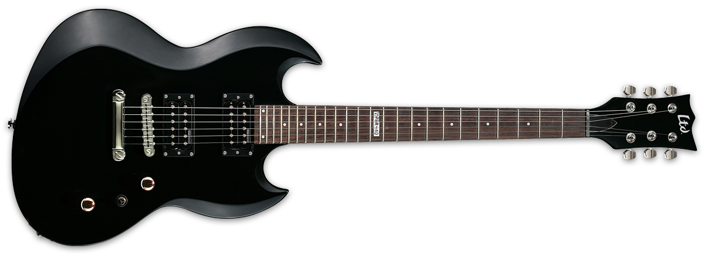
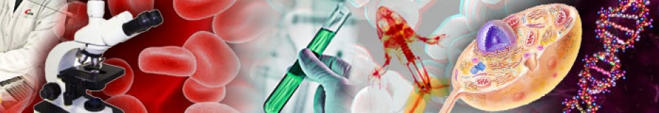
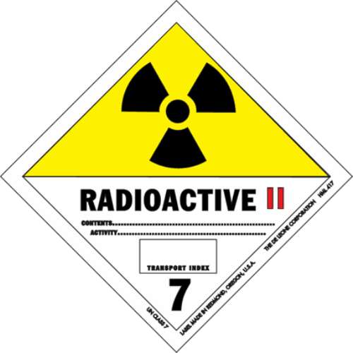
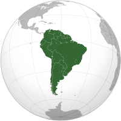

Start playing guitar.
Electric and accoustic.
In a band for 3 years.

High school,
Decize, France.
Scientific degree,
Speciality in biology.

PSE1 Croix-rouge, Decize, France.
General first aid and medical formation.
Start climbing.
Maximum difficulty lvl 7a.
L1 STS - General biology.
Clermont I university
Clermont-Ferrand, France.
Courses: S1 - S2
Clinical investigation. CIC Clermont-Ferrand Dr G. Pickering.
Crossed study to investigate Paracetamol‘s effects under Setrons treatment during chemotherapy.
L2 STS - Pharmacology.
Clermont I university
Clermont-Ferrand, France.
Courses: S3 - S4
C2i UDA, Clermont-Ferrand, France.
Official french informatic acreditation.
Linguistic trip. London, UK
L3 STS - Pharmacology.
Clermont I university
Clermont-Ferrand, France.
Courses: S5 - S6
Module 1: High level of coaching and experiments devlopment. Module 2: Initiation to surgery on rodent model.
Pharmacognosy Lab. UMR 1019 INRA-UDA Dr C. Felgines.
Anti-oxydant effect study of grape extracts on cell cultures and mice with induced inflamation of colon.
NC2 laboratories Sherbrooke North Hospital.
Work and experiments with radioactive isotopes.

Physiology and Pharmacology. Sherbrooke University Dr L. Gendron.
Pharmacological study of a modified leu-enkephaline with the aim of developping a new sedative.
Msc. GEPV. Genomic, Ecophysiology and Vegetal Production
UBP - Vet'Agro Sup
Clermont-Ferrand, France. Courses
GDEC, Team SEVEN. UMR 1095 INRA Drs E. Paux and F. CHoulet.
Bioinformatics study of PAV among transposable elements on wheat 3B chromosome.
Msc. GEPV. Genomic, Ecophysiology and Vegetal Production
UBP - Vet'Agro Sup
Clermont-Ferrand, France. Courses
GDEC, Team SEVEN. UMR 1095 INRA Dr E. Paux.
Bioinformatics study of CNV on gene carried by the wheat 3B chromosome and correction of the wheat phylogeny.
Trip in south America.
Autonomous travel among 8 countries.
Atlantic cross and many different jobs.

Neural Networks for Machine Learning, Coursera, Univ. of Toronto.
16 weeks course about diverse neural networks and deep learning algorithms applied to data science.
Data Scientist. OmicX
Artificial intelligence for automatic text mining and document classification. NLP for automatic biological pipelines design.